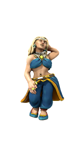

Alys Goodlay
she/her, dwarf, chaotic good
As beautiful as she is deadly, this charming rogue will steal your heart, but it's your purse you should look out for! She's a fine brawler, deadshot with a pistol, and an absolute top shelf shag.
